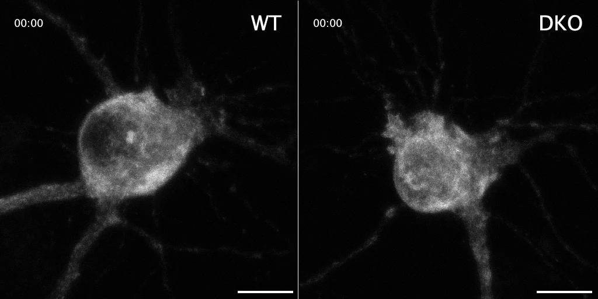
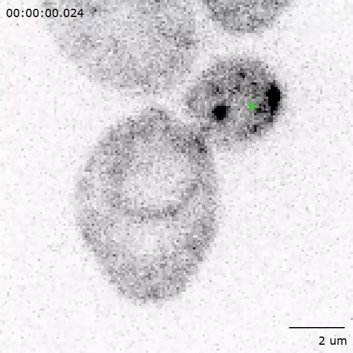

Secretory traffic, observed in two assays
Actual publication movies show synchronized cargo relocation in cultured mouse neurons and a vesicle-marker event in live yeast. They are separate species, specimens and experiments; their clocks reset between figures. Neither movie shows an entire physiological secretion pathway.
Release engineered cargo from an ER hook

Use the playback controls to play/pause, seek and replay. Native pixels preserves source detail; focus the image region and pan with arrows or scroll. The source clock, rather than the player’s seconds, carries the experiment time.
NPY–EGFP–SBP is initially retained by a streptavidin–KDEL ER hook; 40 µM biotin releases it. The source interprets its relocation as ER → Golgi region → post-Golgi puncta. Left WT/control and right DKO are different neurons: control conditional cultures receive inactive ΔCre, while active Cre deletes tomosyn and tomosyn-2. Grayscale reports fluorescence, not natural organelle color. Original bars: 10 µm.
Ordered observations
- Source 00:00: relatively diffuse somatic/process cargo signal around a dark nuclear region.
- Source 01:00: brighter concentrated perinuclear/punctate signal, consistent with the source’s Golgi interpretation.
- Source 01:55: more dispersed punctate signal. Individual membrane profiles, budding necks and fusion pores are not resolved; one early pixel is not tracked into one later granule.
Subkhangulova et al., eLife (2023), Figure 5—video 1, DOI 10.7554/eLife.85561 · CC BY 4.0. Full publisher MP4 unchanged, 1024 × 512, no audio. This is the engineered EGFP cargo assay, not the paper’s separate pHluorin exocytosis assay.
Open complete original mouse movieOpen native initial frame
Mouse preparation and interpretation limits
Primary hippocampal cultures from newborn conditional Stxbp5/Stxbp5l mice. DIV9 transfection, imaging about 16 hours later; Nikon Ti Eclipse/A1R confocal, 40× oil NA1.3, 488 nm, 37°C/5% CO₂. The source’s post-Golgi identity also relies on separate CHGA colocalization experiments; no second marker is shown here. Five-minute sampling leaves intervening motion unobserved. Slower publication playback does not reconstruct that missing motion or show translation, ER entry, Golgi chemistry or cargo discharge.
A tethered fluorescent punctum changes and disappears

The numbered arrow belongs to the original publication. The movie starts paused, does not loop and has its own independent timebase.
Live Saccharomyces cerevisiae, heterozygous GFP-Sec4/Sec4 diploid. GFP-Sec4 labels a vesicle-associated Rab, not soluble luminal cargo. This is an inverted-grayscale sum projection of a shallow six-plane confocal volume; the source green arrow and 2 µm bar are retained.
Ordered observations and inference
- The original arrow identifies a selected bud-region punctum, observed in successive fluorescence images.
- The marked signal changes/disappears; the source defines tethering from a stationary punctum and operational fusion from its last identifiable fluorescence.
- The authors lack a cargo-release reporter: this event does not directly show a fusion pore, cargo discharge, aqueous lumen continuity, membrane collapse or lipid mixing.
Gingras, Sulpizio, Park & Bretscher, eLife (2022), Video 2 / Figure 2D, DOI 10.7554/eLife.78750 · CC BY 4.0. Complete 600 × 600 publisher MP4 unchanged, no audio; 30 encoded frames/s is publication delivery cadence.
Open complete original yeast movieOpen native initial frame
Yeast acquisition and inference limits
The source describes spinning-disk confocal imaging, 100× NA1.45, EMCCD and a moving piezo stage. Exact medium/temperature and a single Video 2 capture interval are unreported here; Video 1’s 176 ms interval is not borrowed. GFP tagging can affect timing, especially without untagged Sec4; the delivered strain retains an untagged allele. The paper’s multi-event mean tether time is not asserted as the measured duration of this particular event.